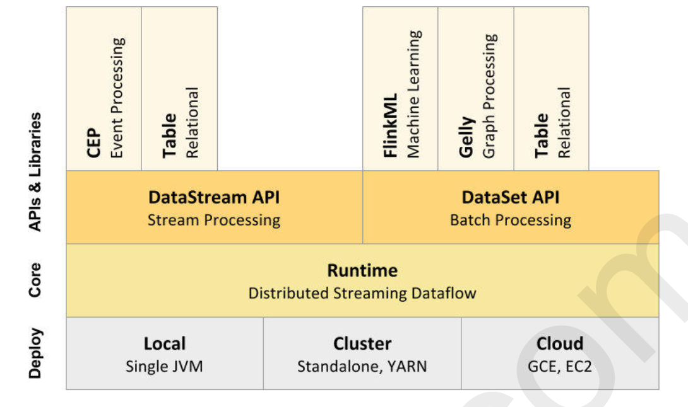
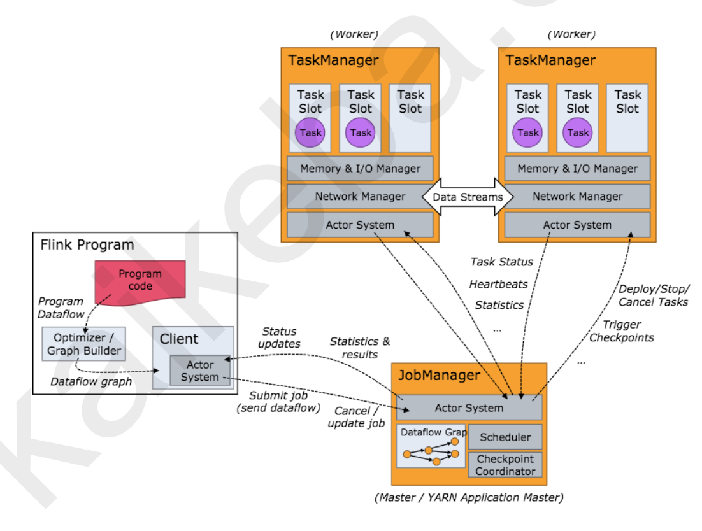
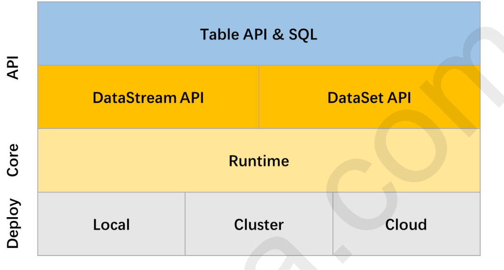
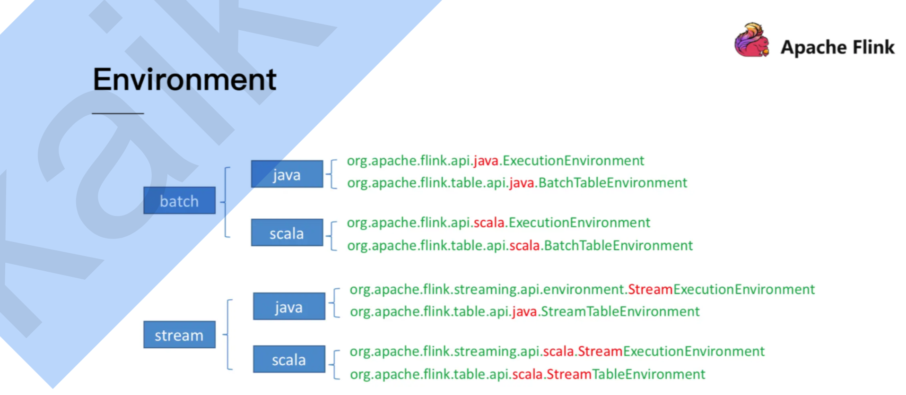
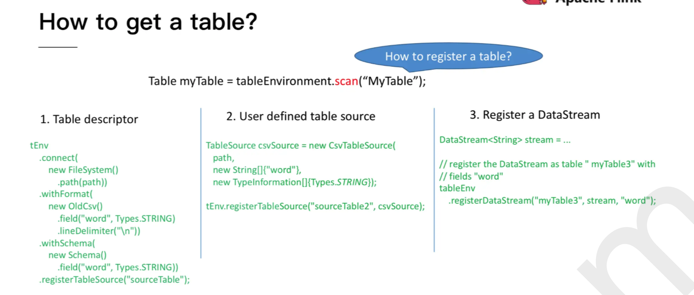
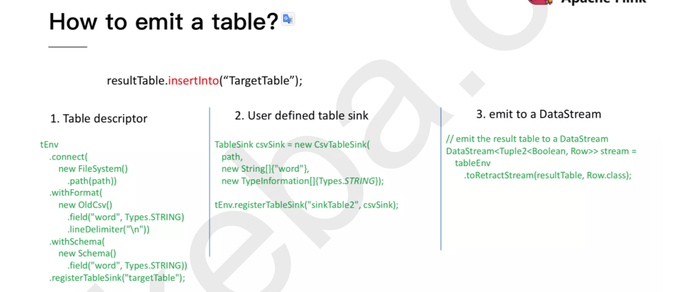
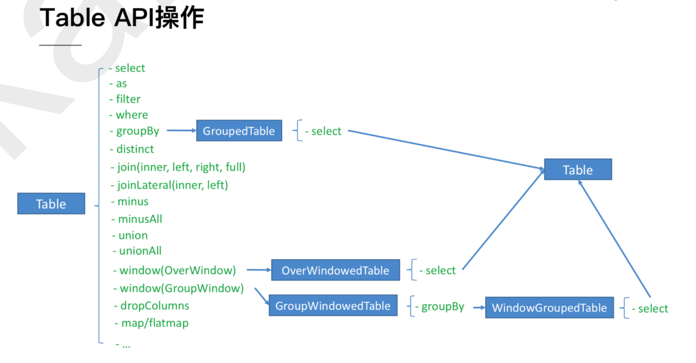

大数据批流处理的未来之路
1 Flink介绍
早起柏林工业大学联合发起的一个关于数据库的研究项目，叫做：stratorsphere。直到2014年4月份捐献给apache基金会，称为apache基金会的孵化项目， 在孵化期间项目stratosphere改名为Flink 随后到2014年12月，该项目成为了apache基金会的顶级项目。
目前新的flink版本已经到了1.9
- Apache Flink 是一个分布式大数据处理引擎，可对有限数据流和无限数据流进行有状态的计算。
- 官网地址:http://flink.apache.org

上图分为三部分
首先要有数据，负责接收数据
中间就是进行计算的部分，具体对数据处理的地方
最终数据输出的地方，把结果存储在某地方
1.1 核心功能
- 同时支持高吞吐、低延迟、高性能
- Sparck Core： 支持高吞吐、高性能： 相对延迟较高
- Stream ：低延迟、高性能框架
- 支持事件时间（Event Time）概念
- 支持有状态的计算
- 支持高度灵活的窗口操作（流式计算）
- 基于轻量级的分布式快照（Snapshot）容错
- 基于JVM实现独立的内存管理
- SavePoints保存点
1.2 应用场景
- 实时智能推荐系统
- 今日头条广告： 与淘宝共享检索数据，实时推送广告
- 复杂事件处理
- 实时欺诈监测
- 实时数仓ETL
- 流数据分析
- 实时报表分析
2 Flink的基础架构
2.1 基础组建栈

2.2 基础架构图

3 Flient API开发
3.1 批处理开发
==使用DataSet Api开发批处理程序==
- 创建maven工程依赖
<dependency>
<groupId>org.apache.flink</groupId>
<artifactId>flink-scala_2.12</artifactId>
<version>1.8.1</version>
</dependency>
<dependency>
<groupId>org.apache.flink</groupId>
<artifactId>flink-clients_2.12</artifactId>
<version>1.8.1</version>
</dependency>
- Scala代码
package flink
import org.apache.flink.api.scala._
/**
* 通过Scala语言开发Flink 批处理程序
*/
object ScalaWorkCount {
def main(args: Array[String]): Unit = {
// 获取Flink批处理执行环境
var env:ExecutionEnvironment = ExecutionEnvironment.getExecutionEnvironment;
// 初始化原数据
var data:DataSet[String] = env.fromCollection(List("hadoop mapreduce","hadoop spark","spark core"))
// 数据处理，切分每一行数据获取所有单词
var words : DataSet[String] = data.flatMap(_.split(" "))
// 把每个单词记为1，封装成元组
var wordAndOne:DataSet[(String,Int)] = words.map((_,1))
// 按照单词进行分组
var groupByWord:GroupedDataSet[(String,Int)] = wordAndOne.groupBy(0)
// 对相同的单词进行分组
var aggregateDataSet: AggregateDataSet[(String,Int)] = groupByWord.sum(1)
// 打印
aggregateDataSet.print()
}
}
- Java代码
package flink;
import org.apache.flink.api.common.functions.FlatMapFunction;
import org.apache.flink.api.java.DataSet;
import org.apache.flink.api.java.ExecutionEnvironment;
import org.apache.flink.api.java.operators.DataSource;
import org.apache.flink.api.java.tuple.Tuple2;
/**
* @author dingchuangshi
*/
public class ScalaWorkCountJava {
public static void main(String[] args) throws Exception {
// 获取Flink批处理执行环境
ExecutionEnvironment env = ExecutionEnvironment.createCollectionsEnvironment();
// 初始化原数据
DataSource<String> data = env.fromElements("hadoop mapreduce", "hadoop spark", "spark core");
// 数据处理
DataSet<Tuple2<String, Integer>> words = data
.flatMap((FlatMapFunction<String, Tuple2<String,Integer>>)(s,out)->{
for (String word: s.split(" ")) {
out.collect(new Tuple2<String,Integer>(word,1));
}
})
.groupBy(0)
.sum(1);
// sink
words.print();
}
}
3.2 流式处理开发
<dependency>
<groupId>org.apache.flink</groupId>
<artifactId>flink-streaming-scala_2.12</artifactId>
<version>1.8.1</version>
</dependency>
- Scala代码
package flink
import org.apache.flink.streaming.api.scala._
import org.apache.flink.streaming.api.windowing.time.Time
import org.apache.flink.streaming.api.windowing.windows.TimeWindow
/**
* 基于scala语言开发Flink的流式处理程序
*/
object ScalaStreamWordCount {
def main(args: Array[String]): Unit = {
//1. 获取flink的流式处理环境
val env: StreamExecutionEnvironment = StreamExecutionEnvironment.getExecutionEnvironment
//2. 构建source数据源
val socketTextStream: DataStream[String] = env.socketTextStream("192.168.18.238",9999)
//3. 数据处理
//3.1 切分每一行，获取所有的单词
val words: DataStream[String] = socketTextStream.flatMap(_.split(" "))
//3.2 把每个单词计为1 封装成元组(单词，1)
val wordAndOne: DataStream[(String, Int)] = words.map((_,1))
//3.3 按照单词进行分组
val groupByWord: KeyedStream[(String, Int), String] = wordAndOne.keyBy(_._1)
//3.4 设置时间窗口
val timeWindow: WindowedStream[(String, Int), String, TimeWindow] = groupByWord.timeWindow(Time.seconds(5))
//3.5 相同单词出现的1累加
val result: DataStream[(String, Int)] = timeWindow.reduce((v1,v2)=> (v1._1,v1._2+v2._2))
//4. 构建Sink
result.print()
//5. 启动流式应用程序
env.execute("ScalaStreamWordCount")
}
}
- 模拟一个socket服务器
nc -lk 9999
4 Flink的Table & SQL API

Table Api是一种关系型Api，类SQL的API。 用户可以像操作表一样的操作数据，非常直观和方便。
Table & SQL API的出现可以解决流处理和批处理统一的API层
- 批处理上的查询会随着输入数据的结束而结束并生成有限的结果集。
- 流处理上的查询会一直运行并生成结果流
- Table & SQL API 做到了批与流上的查询具有相同的语法，因此不用修改代码就能同时实现批和流。
<dependency> <groupId>org.apache.flink</groupId> <artifactId>flink-table-planner_2.11</artifactId> <version>1.8.1</version> </dependency>
4.1 批处理开发
package flink
import org.apache.flink.api.scala._
import org.apache.flink.core.fs.FileSystem.WriteMode
import org.apache.flink.table.api.{Table, Types}
import org.apache.flink.table.api.scala.BatchTableEnvironment
import org.apache.flink.table.sinks.CsvTableSink
import org.apache.flink.table.sources.CsvTableSource
/**
* 基于table & sql api开发 Flink的批处理程序
*/
object ScalaTableSQLBatchWordCount {
def main(args: Array[String]): Unit = {
//1. 获取flink的table批处理环境
val env: ExecutionEnvironment = ExecutionEnvironment.getExecutionEnvironment
val tEnv: BatchTableEnvironment = BatchTableEnvironment.create(env)
//2.构建Source数据源
val tableSource: CsvTableSource = CsvTableSource.builder()
.path("./data/person.txt")
.fieldDelimiter(" ")
.field("id", Types.INT)
.field("name", Types.STRING)
.field("age", Types.INT)
.ignoreParseErrors().lineDelimiter("\r\n")
.build()
//将tableSource注册成表 tEnv.registerTableSource("person",tableSource)
//3. 查询
//3.1 查询年龄大于30岁的人
val result1: Table = tEnv.scan("person").filter("age > 30")
//3.2 统计不同的年龄用户数
val result2: Table = tEnv.sqlQuery("select age,count(*) from person group by age ")
//4. 构建sink //打印表的元数据schema信息
result1.printSchema()
//保存结果数据到文件中 val tableSink1 = new
var tableSink1 = new CsvTableSink("./out/result1.txt", "\t", 1, WriteMode.OVERWRITE)
result1.writeToSink(tableSink1)
val tableSink2 = new CsvTableSink("./out/result2.txt", "\t", 1, WriteMode.OVERWRITE)
result2.writeToSink(tableSink2)
//开启计算
env.execute()
}
}
4.2 流处理开发
package flink
import org.apache.flink.core.fs.FileSystem.WriteMode
import org.apache.flink.streaming.api.scala.{DataStream, StreamExecutionEnvironment}
import org.apache.flink.table.api.Table
import org.apache.flink.table.api.scala.StreamTableEnvironment
import org.apache.flink.table.sinks.CsvTableSink
import org.apache.flink.api.scala._
/**
* 基于table & sql api开发 Flink的流式处理程序
*/
object ScalaTableSQLStreamWordCount {
case class User(id:Int,name:String,age:Int)
def main(args: Array[String]): Unit = {
//1. 获取flink的table流式处理的环境
val env: StreamExecutionEnvironment = StreamExecutionEnvironment.getExecutionEnvironment
val streamSQLEnv: StreamTableEnvironment = StreamTableEnvironment.create(env)
//2. 构建Source数据源
/**
* 101,zhangsan,18
* 102,lisi,20
* 103,wangwu,25
* 104,zhaoliu,15
*/
val socketDataStream: DataStream[String] = env.socketTextStream("node01",9999)
val userDataStream: DataStream[User] = socketDataStream.map(x=>x.split(",")).map(y=>User(y(0).toInt,y(1),y(2).toInt ))
//3. 将流注册成一张表
streamSQLEnv.registerDataStream("userTable",userDataStream)
//4. 使用table && sql api来查询数据
// 使用table 的api查询年龄大于20岁的人
val result1: Table = streamSQLEnv.scan("userTable").filter("age >20")
//使用sql 的api查询
val result2: Table = streamSQLEnv.sqlQuery(" select * from userTable ")
//5. 构建Sink
val tableSink1 = new CsvTableSink("./out/tableSink1.txt","\t",1,WriteMode.OVERWRITE)
result1.writeToSink(tableSink1)
val tableSink2 = new CsvTableSink("./out/tableSink2.txt","\t",1,WriteMode.OVERWRITE)
result2.writeToSink(tableSink2) //开启执行流式计算
env.execute() }
}
4.3 批流一体处理逻辑
4.3.1 初始化环境

4.3.2 获取一个table

4.2.3 输出一个table

4.2.4 Table API
